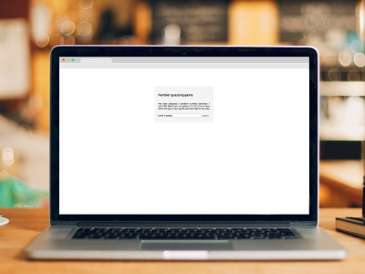

MILENA MELO
Gradueted in advertising
Studying information systems development
UX design and front-end development enthusiastic
Born in Sao Paulo, living in Lisbon
Hello! I'm a 28 years old girl, who loves cycling, drinking chai, dogs and UX readings, that lives in Lisbon and currently studies Information Applied to Organizations, with specialization in Information System Development at ISCTE. I'm graduated in Avertising, area wich I had worked 4+ years as Media and RTV. As an advertising professional, I have learned to wear the client's shoes, to understend his needs and what he expects from a product.
After graduating, I moved to Dublin to study English, and there I had contact with graphic design, bringing my designer side back to life - that was until then, just a hobby. As a UI/UX enthusiastic and looking for new challenges, I decided to move to Lisbon to study IT and explore this new field.
Recently I have finished a multi-discipline freelancer project as designer and developer, exploring all the angles of the project, from the beginning to the end, from creating the branding and corporate identity, flyers and more, to dealing with all the process of puting a website online, buying the domain, host, and the website implementation with the Wordpress CMS.
-

- 
-

Development with HTML, CSS, JavaScript and Wordpress implementation:


{kind=link}
{kind=link}
{kind=link}